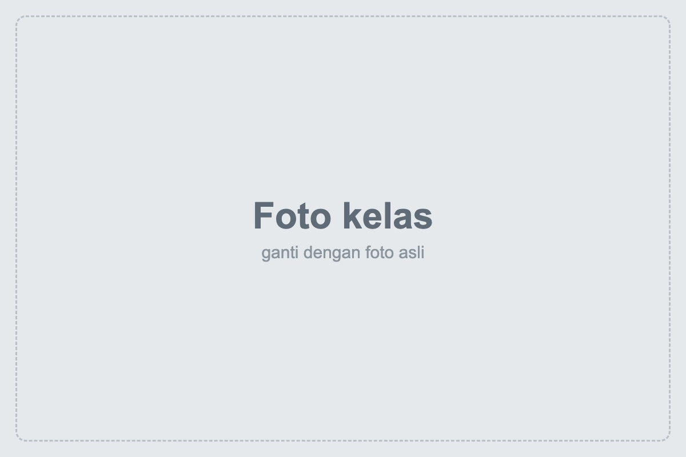

Tahun Ajaran 2026/2027
Kelas 11
Website ini berisi info kelas kami: pengurus kelas, jadwal pelajaran, dan agenda terdekat.
Wali kelas
Ms Mitra
Ruang kelas
Kelas 11
Jumlah siswa
35 siswa
Jam masuk
07.15

Pengurus Kelas
Mereka yang membantu wali kelas mengatur kegiatan kelas sehari-hari.
K
Ketua Kelas
Darren Cheong Jian Le
Memimpin kelas dan menjadi penghubung dengan wali kelas.
W
Wakil Ketua
Mozes Alfeus Cahya
Membantu ketua dan menggantikan tugasnya kalau ketua tidak masuk.
S
Sekretaris
Alycia Sandra Wibowo
Mencatat absensi, jadwal, dan informasi penting kelas.
Jadwal Pelajaran
Jadwal pelajaran dari hari Senin sampai Jumat, sesuai timetable sekolah.
Senin
-
07.30–08.10
Budi Pekerti
Wali kelas
-
08.10–09.30
PJOK
Mr Alvin
-
09.50–11.15
Bahasa Mandarin
Laoshi Karolina
-
11.15–12.00
Informatika
Mr Nuel
-
12.40–13.20
Informatika
Mr Nuel
-
13.20–14.50
Matematika
Mr Candra
-
14.50–15.30
Kimia
Ms Via
Selasa
-
07.30–08.50
Seni Musik
Mr Yudha
-
08.50–09.30
Agama/Religiositas
Mr Agus / Ms Rosa
-
09.50–10.30
Agama/Religiositas
Mr Agus / Ms Rosa
-
10.30–12.00
Biologi
Ms Mitra
-
12.40–14.05
Fisika
Ms Woro
-
14.05–15.30
Bahasa Indonesia
Ms Yuli
Rabu
Jam khusus
-
07.30–08.55
Ekonomi/Akuntansi
Ms Tia
-
08.50–10.20
Misa/Kebangsaan
Wali kelas
-
10.55–12.25
Sosiologi
Mr Bambang
-
13.15–14.45
Bahasa Inggris
Mr Agi
-
14.45–15.30
Matematika
Mr Candra
Kamis
-
07.30–08.50
Bahasa Indonesia
Ms Yuli
-
08.50–09.30
Kimia
Ms Via
-
09.50–10.30
Kimia
Ms Via
-
10.30–12.00
Matematika
Mr Candra
-
12.40–14.05
Bahasa Inggris
Mr Agi
-
14.05–15.30
Sejarah
Mr Bambang
Jumat
-
07.30–08.50
Pendidikan Pancasila
Ms Pola
-
08.50–09.30
Fisika
Ms Woro
-
09.50–10.30
Fisika
Ms Woro
-
10.30–12.00
Ekonomi/Akuntansi
Ms Tia
-
12.40–14.05
Biologi
Ms Mitra
-
14.05–15.30
CCA
Waktu istirahat
-
09.30–09.50
Istirahat 1
-
12.00–12.40
Istirahat 2
-
07.15
Jam masuk
-
15.30
Pulang
Agenda dan Pengumuman
Agenda kelas minggu ini, 16 sampai 20 November 2026.
16 November 2026
Senin
- Batas pengumpulan jurnal literasi buku pengembangan diri.
- Pengambilan nilai listening Mandarin.
- Batas pengumpulan tugas ICT HTML & CSS.
- Membawa baju PE dan buku sesuai jadwal.
17 November 2026
Selasa
- DT Fisika materi fluida dinamis.
- Melanjutkan diskusi Agama.
- DT Bahasa Indonesia materi teks eksplanasi.
- Membawa buku sesuai jadwal.
18 November 2026
Rabu
- AP Ekonomi.
- PPI.
- Batas pengumpulan tugas English unit 2.
- Membawa buku sesuai jadwal.
19 November 2026
Kamis
- DT Kimia materi laju reaksi.
- Batas pengumpulan tugas pembuatan teks eksplanasi Bahasa Indonesia.
- Membawa buku sesuai jadwal.
20 November 2026
Jumat
- Melanjutkan proses 2 DT PKN.
- DT Biologi materi zat makanan.
- Batas pengumpulan ReadTheory bulan November.
- Membawa buku sesuai jadwal.